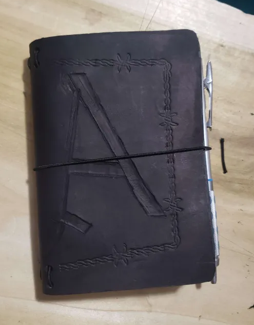
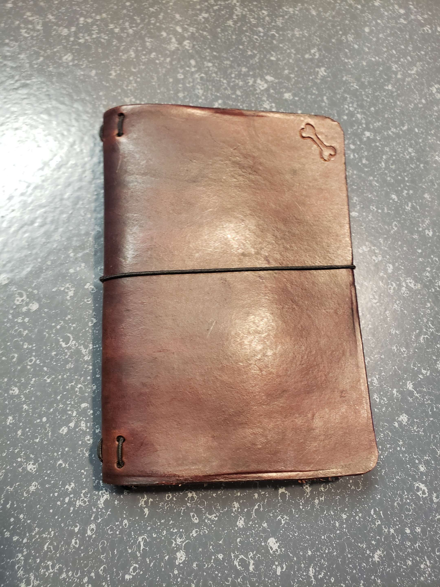
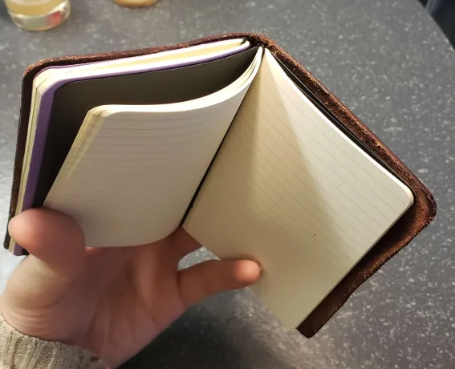
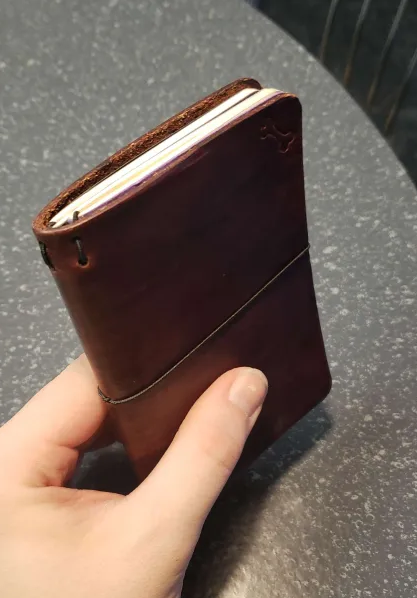

Notebook Covers
Each leather notebook cover is crafted to fit Moleskine Cahier notebooks (3.5" x 5.5") perfectly, as well as any other notebook of the same size. These covers develop character with age while standing up to daily use. The design is simple and functional, allowing you to easily slip in new notebooks as needed. Customizations are available for color, finish, and additional details. Built for those who value both practicality and craftsmanship.



